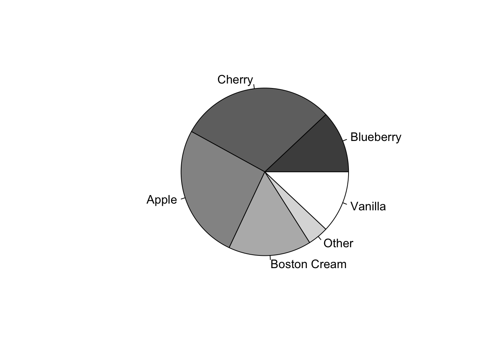
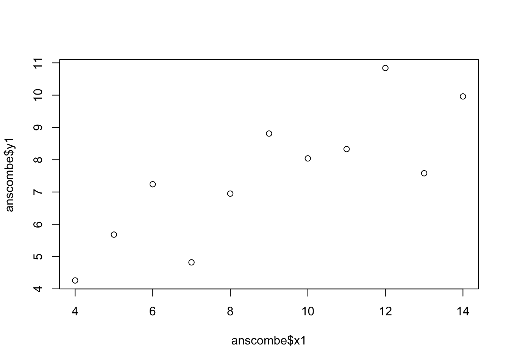
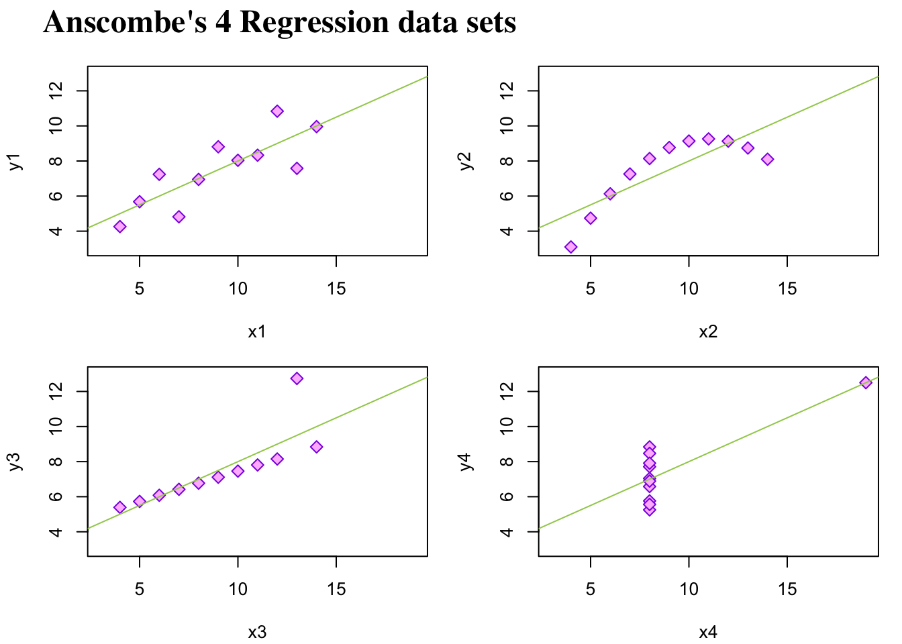
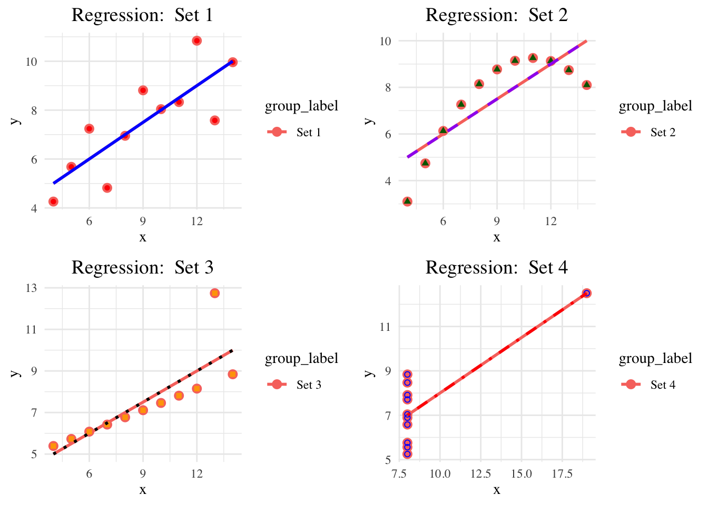

Part 1: Disecting the Pie Chart from ‘murrell01.R’
Code
#|echo: False#|# Pie chartpie.sales <-c(0.12, 0.3, 0.26, 0.16, 0.04, 0.12)# this assigns the proportions of each flavor to a list called 'pie.sales'names(pie.sales) <-c("Blueberry", "Cherry","Apple", "Boston Cream", "Other", "Vanilla")# The above code assigns flavors (names) to each of the proportions in 'pie.sales'. They are ordered, so Blueberry is 0.12, Cherry is 0.3, etc.# The 'pie()' actually creates the pie. It uses the 'pie.sales' as the data. The 'col' argument assigns each flavor a different shade of gray. The 6 shades range from 30% opacity to 100% opacity (equally spaced apart).pie(pie.sales, col =gray(seq(0.3,1.0,length=6)))

While the chart has no title, we can infer from the code that it displays six pie flavors as proportions of total pie sales. Specifics behind the code can be found in the comments.
Part 2: Rerun ‘anscombe01.R’
Code
#|echo: False## Data Visualization## Objective: Identify data or model problems using visualization## Anscombe (1973) Quartletdata(anscombe) # Load Anscombe's dataView(anscombe) # View the datasummary(anscombe)
x1 x2 x3 x4 y1
Min. : 4.0 Min. : 4.0 Min. : 4.0 Min. : 8 Min. : 4.260
1st Qu.: 6.5 1st Qu.: 6.5 1st Qu.: 6.5 1st Qu.: 8 1st Qu.: 6.315
Median : 9.0 Median : 9.0 Median : 9.0 Median : 8 Median : 7.580
Mean : 9.0 Mean : 9.0 Mean : 9.0 Mean : 9 Mean : 7.501
3rd Qu.:11.5 3rd Qu.:11.5 3rd Qu.:11.5 3rd Qu.: 8 3rd Qu.: 8.570
Max. :14.0 Max. :14.0 Max. :14.0 Max. :19 Max. :10.840
y2 y3 y4
Min. :3.100 Min. : 5.39 Min. : 5.250
1st Qu.:6.695 1st Qu.: 6.25 1st Qu.: 6.170
Median :8.140 Median : 7.11 Median : 7.040
Mean :7.501 Mean : 7.50 Mean : 7.501
3rd Qu.:8.950 3rd Qu.: 7.98 3rd Qu.: 8.190
Max. :9.260 Max. :12.74 Max. :12.500
Code
## Simple versionplot(anscombe$x1,anscombe$y1)

Code
summary(anscombe)
x1 x2 x3 x4 y1
Min. : 4.0 Min. : 4.0 Min. : 4.0 Min. : 8 Min. : 4.260
1st Qu.: 6.5 1st Qu.: 6.5 1st Qu.: 6.5 1st Qu.: 8 1st Qu.: 6.315
Median : 9.0 Median : 9.0 Median : 9.0 Median : 8 Median : 7.580
Mean : 9.0 Mean : 9.0 Mean : 9.0 Mean : 9 Mean : 7.501
3rd Qu.:11.5 3rd Qu.:11.5 3rd Qu.:11.5 3rd Qu.: 8 3rd Qu.: 8.570
Max. :14.0 Max. :14.0 Max. :14.0 Max. :19 Max. :10.840
y2 y3 y4
Min. :3.100 Min. : 5.39 Min. : 5.250
1st Qu.:6.695 1st Qu.: 6.25 1st Qu.: 6.170
Median :8.140 Median : 7.11 Median : 7.040
Mean :7.501 Mean : 7.50 Mean : 7.501
3rd Qu.:8.950 3rd Qu.: 7.98 3rd Qu.: 8.190
Max. :9.260 Max. :12.74 Max. :12.500
Code
# Create four model objectslm1 <-lm(y1 ~ x1, data=anscombe)summary(lm1)
Call:
lm(formula = y1 ~ x1, data = anscombe)
Residuals:
Min 1Q Median 3Q Max
-1.92127 -0.45577 -0.04136 0.70941 1.83882
Coefficients:
Estimate Std. Error t value Pr(>|t|)
(Intercept) 3.0001 1.1247 2.667 0.02573 *
x1 0.5001 0.1179 4.241 0.00217 **
---
Signif. codes: 0 '***' 0.001 '**' 0.01 '*' 0.05 '.' 0.1 ' ' 1
Residual standard error: 1.237 on 9 degrees of freedom
Multiple R-squared: 0.6665, Adjusted R-squared: 0.6295
F-statistic: 17.99 on 1 and 9 DF, p-value: 0.00217
Code
lm2 <-lm(y2 ~ x2, data=anscombe)summary(lm2)
Call:
lm(formula = y2 ~ x2, data = anscombe)
Residuals:
Min 1Q Median 3Q Max
-1.9009 -0.7609 0.1291 0.9491 1.2691
Coefficients:
Estimate Std. Error t value Pr(>|t|)
(Intercept) 3.001 1.125 2.667 0.02576 *
x2 0.500 0.118 4.239 0.00218 **
---
Signif. codes: 0 '***' 0.001 '**' 0.01 '*' 0.05 '.' 0.1 ' ' 1
Residual standard error: 1.237 on 9 degrees of freedom
Multiple R-squared: 0.6662, Adjusted R-squared: 0.6292
F-statistic: 17.97 on 1 and 9 DF, p-value: 0.002179
Code
lm3 <-lm(y3 ~ x3, data=anscombe)summary(lm3)
Call:
lm(formula = y3 ~ x3, data = anscombe)
Residuals:
Min 1Q Median 3Q Max
-1.1586 -0.6146 -0.2303 0.1540 3.2411
Coefficients:
Estimate Std. Error t value Pr(>|t|)
(Intercept) 3.0025 1.1245 2.670 0.02562 *
x3 0.4997 0.1179 4.239 0.00218 **
---
Signif. codes: 0 '***' 0.001 '**' 0.01 '*' 0.05 '.' 0.1 ' ' 1
Residual standard error: 1.236 on 9 degrees of freedom
Multiple R-squared: 0.6663, Adjusted R-squared: 0.6292
F-statistic: 17.97 on 1 and 9 DF, p-value: 0.002176
Code
lm4 <-lm(y4 ~ x4, data=anscombe)summary(lm4)
Call:
lm(formula = y4 ~ x4, data = anscombe)
Residuals:
Min 1Q Median 3Q Max
-1.751 -0.831 0.000 0.809 1.839
Coefficients:
Estimate Std. Error t value Pr(>|t|)
(Intercept) 3.0017 1.1239 2.671 0.02559 *
x4 0.4999 0.1178 4.243 0.00216 **
---
Signif. codes: 0 '***' 0.001 '**' 0.01 '*' 0.05 '.' 0.1 ' ' 1
Residual standard error: 1.236 on 9 degrees of freedom
Multiple R-squared: 0.6667, Adjusted R-squared: 0.6297
F-statistic: 18 on 1 and 9 DF, p-value: 0.002165
Code
#plot(anscombe$x1,anscombe$y1)#abline(coefficients(lm1))#plot(anscombe$x2,anscombe$y2)#abline(coefficients(lm2))#plot(anscombe$x3,anscombe$y3)#abline(coefficients(lm3))#plot(anscombe$x4,anscombe$y4)#abline(coefficients(lm4))## Fancy version (per help file)ff <- y ~ xmods <-setNames(as.list(1:4), paste0("lm", 1:4))# Plot using for loopfor(i in1:4) { ff[2:3] <-lapply(paste0(c("y","x"), i), as.name)## or ff[[2]] <- as.name(paste0("y", i))## ff[[3]] <- as.name(paste0("x", i)) mods[[i]] <- lmi <-lm(ff, data = anscombe)print(anova(lmi))}
Analysis of Variance Table
Response: y1
Df Sum Sq Mean Sq F value Pr(>F)
x1 1 27.510 27.5100 17.99 0.00217 **
Residuals 9 13.763 1.5292
---
Signif. codes: 0 '***' 0.001 '**' 0.01 '*' 0.05 '.' 0.1 ' ' 1
Analysis of Variance Table
Response: y2
Df Sum Sq Mean Sq F value Pr(>F)
x2 1 27.500 27.5000 17.966 0.002179 **
Residuals 9 13.776 1.5307
---
Signif. codes: 0 '***' 0.001 '**' 0.01 '*' 0.05 '.' 0.1 ' ' 1
Analysis of Variance Table
Response: y3
Df Sum Sq Mean Sq F value Pr(>F)
x3 1 27.470 27.4700 17.972 0.002176 **
Residuals 9 13.756 1.5285
---
Signif. codes: 0 '***' 0.001 '**' 0.01 '*' 0.05 '.' 0.1 ' ' 1
Analysis of Variance Table
Response: y4
Df Sum Sq Mean Sq F value Pr(>F)
x4 1 27.490 27.4900 18.003 0.002165 **
Residuals 9 13.742 1.5269
---
Signif. codes: 0 '***' 0.001 '**' 0.01 '*' 0.05 '.' 0.1 ' ' 1
Code
sapply(mods, coef) # Note the use of this function
$lm1
Estimate Std. Error t value Pr(>|t|)
(Intercept) 3.0000909 1.1247468 2.667348 0.025734051
x1 0.5000909 0.1179055 4.241455 0.002169629
$lm2
Estimate Std. Error t value Pr(>|t|)
(Intercept) 3.000909 1.1253024 2.666758 0.025758941
x2 0.500000 0.1179637 4.238590 0.002178816
$lm3
Estimate Std. Error t value Pr(>|t|)
(Intercept) 3.0024545 1.1244812 2.670080 0.025619109
x3 0.4997273 0.1178777 4.239372 0.002176305
$lm4
Estimate Std. Error t value Pr(>|t|)
(Intercept) 3.0017273 1.1239211 2.670763 0.025590425
x4 0.4999091 0.1178189 4.243028 0.002164602
Code
# Preparing for the plotsop <-par(mfrow =c(2, 2), mar =0.1+c(4,4,1,1), oma =c(0, 0, 2, 0))# Plot charts using for loopfor(i in1:4) { ff[2:3] <-lapply(paste0(c("y","x"), i), as.name)plot(ff, data = anscombe, col ="red", pch =21, bg ="orange", cex =1.2,xlim =c(3, 19), ylim =c(3, 13))abline(mods[[i]], col ="blue")}mtext("Anscombe's 4 Regression data sets", outer =TRUE, cex =1.5)
Code
par(op)
As we saw in Assignment 1, these regression models all conclude with similar estimated coefficients. However, they all look very different graphically. The actual distributions of points, while very different, were able to pull the slope in the same direction. The colors chosen for the plot clearly differentiate the points from the regression lines. Blue and orange are on opposite ends of the color wheel, so this is not surprising. I suspect that similar outcomes can be reached by using more colors that are opposites on the color wheel, the contrast makes everyhting pop. You could also consider changing the font of labels to make them stand out from the relatively plain x-tick markers. Adding a grid to the background of the plot could make it easier to get an estimate for the true coordainates for each point. Lastly, the title could be changed to an eye catching font.
Part 3: Finetune using R Graphics
Use a Serif Font
Use non-default colors
Use a different plotting character
Code
## Data Visualization## Objective: Identify data or model problems using visualization## Anscombe (1973) Quartletdata(anscombe) # Load Anscombe's data#View(anscombe) # View the data#summary(anscombe)## Simple version#plot(anscombe$x1,anscombe$y1)#summary(anscombe)# Create four model objectslm1 <-lm(y1 ~ x1, data=anscombe)#summary(lm1)lm2 <-lm(y2 ~ x2, data=anscombe)#summary(lm2)lm3 <-lm(y3 ~ x3, data=anscombe)#summary(lm3)lm4 <-lm(y4 ~ x4, data=anscombe)#summary(lm4)#plot(anscombe$x1,anscombe$y1)#abline(coefficients(lm1))#plot(anscombe$x2,anscombe$y2)#abline(coefficients(lm2))#plot(anscombe$x3,anscombe$y3)#abline(coefficients(lm3))#plot(anscombe$x4,anscombe$y4)#abline(coefficients(lm4))## Fancy version (per help file)ff <- y ~ xmods <-setNames(as.list(1:4), paste0("lm", 1:4))# Plot using for loopfor(i in1:4) { ff[2:3] <-lapply(paste0(c("y","x"), i), as.name)## or ff[[2]] <- as.name(paste0("y", i))## ff[[3]] <- as.name(paste0("x", i)) mods[[i]] <- lmi <-lm(ff, data = anscombe)print(anova(lmi))}sapply(mods, coef) # Note the use of this functionlapply(mods, function(fm) coef(summary(fm)))# Preparing for the plotsop <-par(mfrow =c(2, 2), mar =0.1+c(4,4,1,1), oma =c(0, 0, 2, 0))# Plot charts using for loopfor(i in1:4) { ff[2:3] <-lapply(paste0(c("y","x"), i), as.name)plot(ff, data = anscombe, col ="blueviolet", pch =23, bg ="plum1", cex =1.2,xlim =c(3, 19), ylim =c(3, 13))abline(mods[[i]], col ="darkolivegreen3")}mtext(substitute(paste(bold("Anscombe's 4 Regression data sets"))), outer =TRUE, cex =1.5, side =3, adj =0.1, family ="serif")

Code
par(op)
Part 4: Try it with ‘ggplot2’
Code
# Load necessary librarieslibrary(gridExtra)library(ggplot2)data(anscombe)# Reshape the Anscombe data for ggplot2 (long format)anscombe_long <-data.frame(x =c(anscombe$x1, anscombe$x2, anscombe$x3, anscombe$x4),y =c(anscombe$y1, anscombe$y2, anscombe$y3, anscombe$y4),group =rep(c("Set 1", "Set 2", "Set 3", "Set 4"), each =nrow(anscombe)))# Define a plot function to customize each plotgg_anscombe <-function(data, group_label) {ggplot(data, aes(x = x, y = y)) +geom_point(aes(color = group_label), size =3, shape =16) +geom_smooth(method ="lm", se =FALSE, aes(color = group_label), size =1) +labs(title =paste("Regression: ", group_label), x ="x", y ="y") +theme_minimal(base_family ="serif") +# Set font to seriftheme(plot.title =element_text(hjust =0.5, size =14)) # Center the title}# Plot 1p1 <-gg_anscombe(anscombe_long[anscombe_long$group =="Set 1", ], "Set 1") +geom_point(color ="red", shape =16) +# Red points, filled circlesgeom_smooth(method ="lm", se =FALSE, color ="blue", linetype =1) # Blue solid line# Plot 2p2 <-gg_anscombe(anscombe_long[anscombe_long$group =="Set 2", ], "Set 2") +geom_point(color ="darkgreen", shape =17) +# Green points, trianglesgeom_smooth(method ="lm", se =FALSE, color ="purple", linetype =2) # Purple dashed line# Plot 3p3 <-gg_anscombe(anscombe_long[anscombe_long$group =="Set 3", ], "Set 3") +geom_point(color ="orange", shape =15) +# Orange points, squaresgeom_smooth(method ="lm", se =FALSE, color ="black", linetype =3) # Black dotted line# Plot 4p4 <-gg_anscombe(anscombe_long[anscombe_long$group =="Set 4", ], "Set 4") +geom_point(color ="blue", shape =1) +# Blue open circlesgeom_smooth(method ="lm", se =FALSE, color ="red", linetype =4) # Red dot-dash line# Arrange the four plots into a gridgrid.arrange(p1, p2, p3, p4, nrow =2)

Part 5: Pre-Hackathon
My team was unable to reproduce Dr. Ho’s graph perfectly. This is as close as we got.